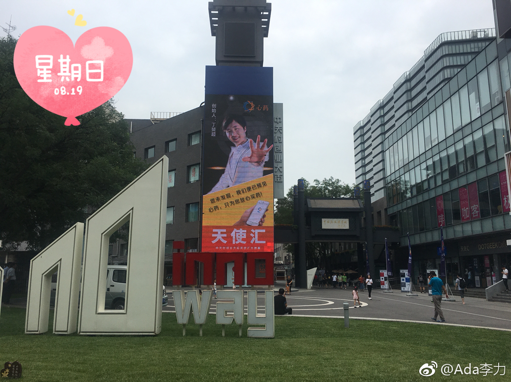

@Ada李力:
上午去了中关村创业大街，跟鼎盛时期相比，人气确实差了很多。一条街上，只有黑马学院，3W咖啡看起来还有人在来来往往。
以创业服务概念上了创业板的创业黑马，去年营收据说有1.8亿。做为上市公司，营业压力应该蛮大，创业实验室十万一期，一周的沙漠健走活动2万元…
很怀念创业大街上早期的车库咖啡，苏菂现在做什么？ 北京·中关村创业大街
北京·中关村创业大街
以创业服务概念上了创业板的创业黑马，去年营收据说有1.8亿。做为上市公司，营业压力应该蛮大，创业实验室十万一期，一周的沙漠健走活动2万元…
很怀念创业大街上早期的车库咖啡，苏菂现在做什么？
- 